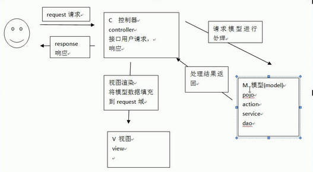

Java On Call 7
- Java基础知识
- 面向对象
- 常用API
- 集合I/O
- 多线程、网络编程、反射、设计模式
这是准备java面试的第二天，以上的分类的思维导图，来自->这里
- 这里是整理好的面试题，至少都过一遍:
Notes of this video
Spring MVC
- Spring MVC是个基于MVC架构的用来简化web应用程序开发的应用开发框架
- Easy to work with
- Easy to learn
- Flexible
- Seperation of Concern
-
对于普通的MVC，可能你有很多的controller，然后当一个用户请求被传输过来的时候，有一个web.xml文件来为不同的用户请求分配不同的controller，这样就很繁琐。用Spring MVC的话，所有的用户请求都会先传输到一个FrontController叫做DispatcherServlet，然后这个FrontController负责为不同的客户请求分配不同的controller。当然，DispatcherServlet会有个配置文件，根据配置文件去找到对应的controller。所谓的“找到controller”指的是对应的controller会把对应的model和view的名字返还给FrontController，然后FrontController去call对应的view，再用FrontController把这个view和数据返还给client。所以一切都是由DispatcherServlet来完成的，内部的细节各个部分都不知道全局
- 普通的MVC是通过web.xml，找到对应的controller，然后对应的controller把数据从数据库拉出来，然后把数据传输到view里面

- MVC(Model-view-controller)是软件工程中的一种软件架构模式，把软件系统分为三个基本部分（对应其名字）：模型，视图，控制器
- 模型：程序员编写程序应有的功能（实现算法等）、数据库专家进行数据管理和数据库设计
- 视图：界面设计人员进行图形界面设计
- 控制器：负责转发请求，对请求进行处理
.jsp: Java Server Pages (JSP) is a server-side programming technology that enables the creation of dynamic, platform-independent method for building Web-based applications.- 当我新建一个Maven web框架的时候，里面的.jsp文件就是以html格式来编写的
- Spring MVC把一个请求找到一个controller
- 如果要用Spring MVC的话，需要在原来的web.xml中定义一个
，这里面用了springframework的web.servlet.DispatcherServlet，当然啦需要在Maven的dependency中加入这个包。并且要有另外一个xml文件作为这个DispatcherServlet的配置文件，这里面声明了对应的一个客户请求会怎么map到对应的controller（就是一个class） - 比如可以在jsp文件中定义一个form，当submit之后他就会找到web.xml中的DispatcherServlet，再由这个servlet去找到对应的class
- 在这个对应的class，你得用@Controller去注释这个类，并且在类中要注明什么样的请求会找到这个controller，那么这些就是告诉你怎么把html文件/请求map到一个class文件中
- 这个class文件可以通过requests接收到用户输入的东西
- 然后通过ModelAndView对象去把在class后端文件中处理的数据传输到page里面
- 在page中可以用request来把这个东西给取得，或者是使用expression language：
Result is: ${result} -
然后可以令这个class文件return一个string，这个string里面声明了一个page的地址，那么Dispatcher就会接收到这个，就会把page给调处出来
- 但是其实controller是属于controller layer的，可以看到他负责和Dispatcher和page调动，而真正的一些后端的内容，应该声明另一个类来完成。这个后端类会被controller调用，去完成一些计算，或者是逻辑的工作。